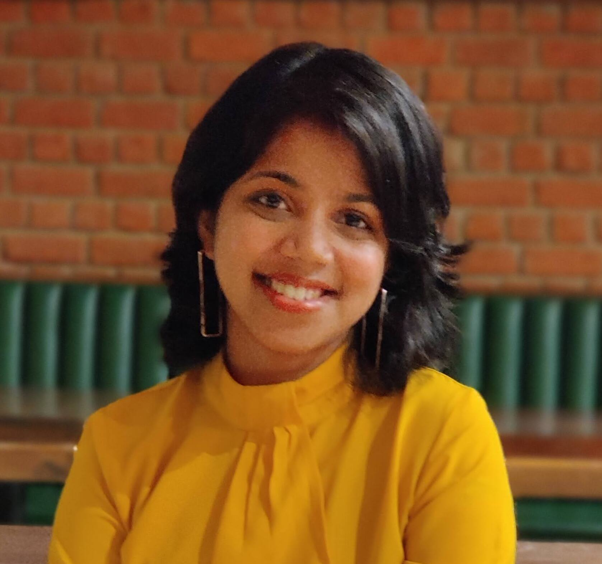

I am a 4th-year PhD student in Computer Science and Engineering at the University of California San Diego, advised by Prof. Yatish Turakhia and Prof. Siavash Mirarab.
My research sits at the intersection of High-Performance Computing (HPC) and Computational/Evolutionary Genomics. I design efficient hardware/software co-designed tools for genomic data analysis — from FPGA-accelerated dynamic programming frameworks to fully automated phylogenomic pipelines. My tools are actively used by researchers worldwide, with ongoing collaborations with the Vertebrate Genomes Project (VGP) consortium and researchers at the Scripps Institution of Oceanography, UCSD.
I received my M.S. in Computer Engineering from UC San Diego (GPA: 4.0) and my B.Tech. in Electronics and Telecommunication Engineering from IIEST Shibpur, India (GPA: 9.55/10, Rank: 4). Before my PhD, I spent 3+ years as a Digital Design Engineer at Analog Devices, contributing to SoC design with a successful tape-out experience. I was also awarded the DAAD WISE Scholarship for a summer research internship at the University of Bremen, Germany.

"Accurate, scalable, and fully automated inference of species trees from raw genome assemblies using ROADIES" was published in the Proceedings of the National Academy of Sciences and selected as the cover article for the issue. The work was also featured in the UCSD Newsletter and highlighted across multiple research platforms.
(ROADIES)
(ROADIES repo)
across the globe
(2019–2026)
Press & coverage:
IEEE HPCA 2026 — Las Vegas, NV, USA, March 2026.
ISMB 2024 — Montreal, Canada, July 2024.
UC San Diego Research Expo 2024 — La Jolla, CA, April 2024.
Active research collaborations with leading institutions and consortia: